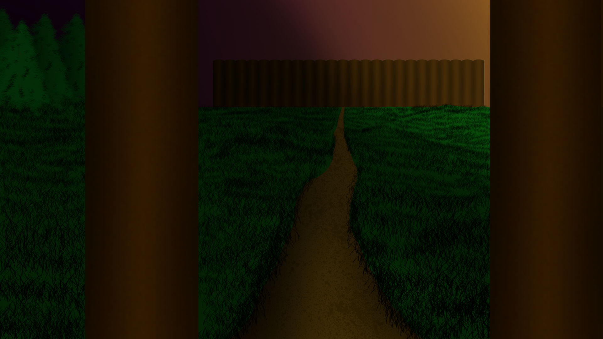

There is a banging sound emanating from the bedroom door, causing Viper and Bullivar to
wake up. Since their nosepins have been off for a while now, their noses have long since adjusted
to the sewers.
"Do you hear that knocking Bullivar?"
"Yeah;" he sighs.
"What do you think is stranger; that someone's knocking on a door in the sewer or
that there's a door in the sewer?"
".....Neither. I'd hope people would have manners," Bullivar complains whilst geting up to grab the door.
Viper hastily hides in the straw bed, peeking an eye out near the foot of the bed.
"Oh, I see your awake. I thought what I gave you would only knock you out for half an hour yet
it's been nearly half a day. Sorry about that," Matilda apologises.
- (To be continued...)
Hunted
Chapter 1
Part 13May 12, 2020
Ragnar lifts the manhole cover and decends down the ladder with Viper. Bullivar puts on his nosepins
and follows, making sure to shift the manhole cover back over the entrance. Upon entry to the sewers,
the group notices a small group of turtles wearing: blue, purple, orange, and red colored face masks
accompanied by a rat. "I tell you, the things people flush down here... come on, this way," Ragnar
instructs. The others follow, after Bullivar finishes noting the strange creatures.
They travel through the sewers for about another 10 minutes and approach a dank wooden door.
Ragnar knocks on the door. The door opens. "Doing as well as ever I see," an old accented women's voice
can be heard emanating from the other room. "Come in come in." The party enters the room. Along the
walls are vials of all sorts. Books accompany them along the shelves. There is a single other door inside
to the right. "Matilda, I've brought friends. I was hoping you would tend to their injuries, either the
ointment you gave me last time has gone stale or I'm losing my touch." "Very well, bring them over here;
I'll see what I can do." Thinking it's now safe, Bullivar and Viper take off their nosepins. They then proceed
to pass out, falling backwards into the slimy sewer water with a splash.
Bullivar wakes up on a cozy straw bed in a small room. There is a candle on the night stand gentily
lighting the area. Bullivar yawns with a stretch, gets up and scratches his tush. He then pokes Viper awake
with said hand, waking him up. "Do we remember how we got here?" Viper asks. Bullivar ponders that for
a moment and then shakes his head, "Nope." Viper then grops his face to aid his awakening. He feels the
nosepins are now back on his face. After his eyes come back into focus from his face fondling, he notices
Bullivar also has his nosepins back on. "You think we're still in the sewers?" Bullivar asks. "Probably. Is
your nose getting sore by the way? I feel like this is going to leave a mark on my face after this."
"Why were we going through the sewers again?" Viper asks. "I think it had to do with seeing some lady
called... Matilda? I think." Bullivar answers. "We should probably try finding this Matilda then." Viper states.
Bullviar yawns again, "If we don't remember falling asleep, I would assume we had our wounds already
attended to." Bullivar and Viper look over their wounds only to notice that they are no longer existant,
not even a scratch remains on either of them. Bullivar pokes where his scar was before, staring in awe
at its complete recovery. Bullivar inspect the walls to see if they are still in the sewers. The walls
are made of stone bricks with mold filling it's crevices. "I know one way we can be sure if we're in the
sewers," Viper suggests with his index finger pointing in the air. "Lets try taking off our nosepins."
Bullivar and Viper take off their nosepins together. Their vision start to blur again. "Yep... definitely still in
the sewers," they say in unison just before they plop back into the bed. Bullivar lands in an aquward
position face forward over Viper's lap.
- (To be continued...)

Hunted
Chapter 1
Part 12Apr 25, 2020
"So... why do you guys live in tents and not in town?" Viper asks. "Tents are mobile,
houses; not so much. Before, the wolves would actually stay in the forest," Ragnar
replies. "It's gotten that bad?" Bullivar asks. "I'm afraid so, the town has been requesting
help from Rend for the last two moon cycles... but to no prevail." Bannen replies.
"What's Rend?" Viper asks. "Rend is the capital of the Felaneer province. It's about a
few days travel from Vatherdone by horse," Bannen replies.
After an hour or so of travel, Vatherdone appears in sight to the east. There is howling
coming south from the forest. "Fun..." Bullivar rhetorically states. "I don't think they spotted us yet,
I'm going to check it out, you guys head towards town I'll catch up later." Bannen says. "Got it, be careful,"
Ragnar warns. "Of course."
The rest of the party then heads towards the large wooden gates of Vatherdone. "Okay, the place is kind
of out of the way and involves... sneaking, try to lay low," Ragnar instructs while making a lay low gesture
with his hands. Bullivar nods, a single sweat drop drips from his forhead indicating his doubt in his stealth
skills. Viper makes a shushing gesture in acknowledgement.
The party starts to cross the town lead by Ragnar. Along the way there are houses, shops,
and... "Hey Ragnar, what's that tall tower in the center of town?" Viper inquires. "Oh, that's
Vatherdone Library. It's known far and wide for it's expansive nature and the accuracy of it's books.
Oh, and I've heard one of the librarians is quite the looker."
Moments later, Bullivar gets bumped and falls on his rump. "Ouch ouch ouch," Bullivar complains
while rubbing his backside. "Need a hand?" Viper offers with an extended hand. Bullivar grabs it
and dusts himself off. "Thanks. Umm, where did Ragnar go? Oh, he's over there. Come on Viper,
no time to dally!" Viper squints at bullivar then joins him on his pursuit of Ragnar. Due to the crowded
area, it takes about 5 minutes before they reach the same abrupt turn Ragnar took into an alleyway.
"Boo!" Viper and Bullivar jolt backwards from Ragnar's surprise. "When I said keep on the down low, I
meant from everyone else; not me! Anyhow, here we are." He proudly states while looking down
towards the manhole cover below him. "You might want these." He tosses Bullivar and Viper each a wooden
nose pin."
- (To be continued...)
Hunted
Chapter 1
Part 11Feb 28, 2020
Bullivar hands Ragnar his key and slides out of bed. "I'll try to keep this better hidden
next time..." says Ragnar. "Now get!" Bullivar returns to his hut.
"Where were you Bullivar?" Viper asks while rubbing his eyes after having the morning
light blind him upon Bullivar's entry. "Oh, nowhere.... Nowhere in particular anyway."
"I remember hearing a woman talking to you Bullivar, but there are no other women
other than Flair and she is spoken for so who were you talking with?" "She offered me
a sleeping companion.... regardless whether she meant herself or some other gal,
she delivered." "There are no other ga... Did she cheat on Bannen?" "No. I got somebody
else," Bullivar says still being nonchalant about the whole thing. "Oh, you don't want him
to find out eh? I get it I’ll keep it on the down low." Viper assures Bullivar, making an okay
hand sign with a wink. "No, I'm being serious," Bullivar sighs. "I got a man." Viper then
proceeds to laugh his ass off. "Okay, I'll keep this hidden." "She delivered." Bullivar sighs
again, this time while rubbing his temples, "Remind me not to drink or trust her with
matters regarding accompaniment." Viper and Bullivar head to the main tent.
There are plenty of furs covering the tent's floor and walls, presumably to help keep the
hunters warm during this winter. Flair can be seen warming her hands near the fireplace
residing in the center of the room. "Well met, have a nice rest?" she waggles her
eyebrows towards Bullivar. Bullivar completely ignores her obvious attempt to provoke
him and sits beside her near the fireplace along with Viper.
Bannen enters the tent. "Good morning. You two must have cooled down from last night
I see. How's the leg Viper? Bullivar, can you pinch your left fingers together?" "My leg is
doing much better," Viper replies. Bullivar attempts to pinch each of his fingers together
as instructed. To his surprise, the pain has ceased. However, he clearly notices that his fine
motor skills are still being inhibited and only time will heal his newly acquired PTSD involving
his own hand having been eaten by a demon wolf.
"Morning. Who's heading to town today? We're running low on ointment," Ragnar asks while
opening the tent entrance. "Not it," Flair immediately responds. "I would actually love to see
where you get your 'magic' ointment from," Viper eagerly replies." "I'll show you if you
come along. Bannen, you coming?" "I'm game. Flair, you hold down the fort." Viper, Bannen,
and Ragnar head towards the tent exit. "Hey Flair, don't do anything I wouldn't do... alright?"
Ragnar requests. "I won't," she smirks. "Hey Flair, would you do Bull?" Viper asks. "I would do
me." Bullivar smirks, making the uncomfortable suggestion joke. Flair escorts Bullivar towards
Viper, politely smiles, and proceeds to bash their heads together. "I would do unimaginable
things to both of you," Flair whispers into both of their ears. She pushes Bullivar towards
Bannen. "Take this one with you too, I'm taking a bath." She then leaves for the bathing area.
"Very well..." Bullivar sighs. "Let's hope the wolves have calmed down."
- (To be continued...)
Player Notes
(Isanna)
Entry 1Dec 30, 2019
"I want rice
I crave rice whenever I’m upset
I don’t often crave chocolate
I crave rice
Rice
Rice is life
But chocolates are yummy
But I can only eat a select few of those."
- Isanna's player (Not in the story yet.)
Hunted: Chapter I: Part X - Oct 21, 2019
After having his face plunged deeply into the snow by a sleeping Viper, Bullivar looks up
to see Flair leaving what presumably was their tent. Flair spots Bullivar lying in the snow
and rushes to approach him. "What are you doing with your face in the snow?" Viper asks. "I thought
I could find our beds without assistance..." Bullivar chuckles, his cheeks a bit red. "Best get you two
inside lest you catch a cold." Flair helps Bullivar to his feet and escorts him
to the tent, dragging viper along in the snow.
"Here we are. Burrr, it's cold outside," Flair shivers. "Right, you didn't have any of the Warm me up Juice.
You think you'll be okay?" Bullivar asks concerned. "Hmm, now that you mention it..." Flair pauses, putting a
finger to her lips. "You married?" Bullivar shakes his head, "Umm... no; why?" Flair chuckles,
"Just wondering. Here," she hands Bullivar a key and whispers into his ear," if you feel like sharing
some warmth with a cozy teddy bear, come to the tent on the east side of camp." She winks at him
and then hastily leaves the room. Bullivar begins contemplating what had just happened.
"Okay, why would I need a bear tho-ooooooh..." Bullivar looks at Viper to notice the grin on his face
as well as his blushed cheeks. Bullivar puts Viper to bed and tucks him in. "It appears I have a date,"
he says with a smile. Viper begins mumbling, "Ahh Drankin; GOD! heh heh heh." Bullivar then proceeds to
tiptoe out of the tent.
This time with his dignity in tact, Bullivar makes it to the tent. Ready with his newly aquired key,
he quietly unlockes and opens the door. Although the room is dark, he manages to
make out the shape of someone sleeping in the bed. He quietly moves over to the bed and
attempts to inspect their face. After much deliberation, he has concluded that her face is indeed covered
by the blanket. "Eh, I'm sure it's fine..." He decides to hop into bed and wrap
his arms around her carefully as to not wake her up. "Okay, I'll just put my left arm over the
blanket and my right hand..." He slides his right hand under her pillow. "Mmm, warm. Goodnight."
The morning sun rises in the distance and lights up the tent with an amber glow. As Bullivar opens his
eyes he sees a silhouette in his still blurry vision. In a groggy voice he says, "Morning Flair, thank you for
being my teddy bear for the night, it was nice." Bullivar is surprised by the deep familar voice
to reciprocate, "Who are you calling a teddy bear? And... why are you cuddling me?" Almost immediately,
Bullivar rips his arms away from Ragnar. "Let me guess, she tricked you?" Ragnar asks in a knowing tone.
"Yes..." Bullivar admits. "I should have known better than to pass out while she's in the party,
so... are you gonna get out of my bed or..."
- (To be continued...)
Hunted: Chapter I: Part IX - Oct 12, 2019
"So, nice place you got here," viper states as the three walk towards the campfire.
"Better than that cage, that's for sure." Bullivar chuckles.
"I suppose your right," Bannen agrees with a smile. "Either of you want a pelt or something?
Not to be rude but your clothes have probably seen better days and you weren't really
dressed for winter in the first place." Viper and Bullivar look at their sorry excuses for clothing,
nod at each other and glady accept Bannen's offer. Bannen grabs a couple of pelts from the storage
tent on the way and tosses them to the our tattered heros.
Ragnar retuns with the Make Me Warm Juice and pores some of the drink into cups for everyone.
Bannen raises his cup, "For the quick healing of our guests. And for getting drunk off our asses."
Everyone takes a sip. Viper displays a cheerful smile after experiancing the drink for the first time.
He starts feeling a nice warmness coming from his belly. It kind of feels like a radiator for his body.
Bannen makes a satisfied sound after his longer than average sip. "That hit the spot."
"This is great!" Viper adds, afterwhich drinking more. He can now feel the warmth has spread
all over his body. Bullivar is taking his sips more sparingly than the others. "Careful, this is no
ordinary ale, drink too much and you'll be sweating for the rest of the night." Ragnar warns.
Viper starts taking another sip anyway while looking at Ragnar. "Oh ho ho, challenge accepted!
Ragnar and Viper down the rest of their drinks and top them back up for an even start. Ragnar
takes a seat beside Viper. "Why would you want that? The sweat will make you colder faster,"
Bullivar sighs.
Viper starts off with the first swig, his vision gets slightly wavy.
Ragnar then matches him; however, he seems to be as sober as when he started.
After their fourth drinks, Viper is visibly sweating (presumably from the warmth of
the juice.) However, Ragnar seems to still be fine. After their seventh drink,
their both laughing with an arm around each other. "When if comes to drinking with
Ragnar, there is no inbetween; he's either completly sober or drunk off his ass." Bannen
whispers to Bullivar. "That would explain things. This is why I don't drink in competition,"
Bullivar smirks. "Because yyoouu rrrre a sissssy" Viper drunkenly declares to Bullivar.
"I like you, youuu rally know how to held eurr liquorar." Ragnar drunkenly stumbles.
"Tanksss buddè, you rally gave me a run for me money too." Viper returns just as drunkenly.
"Okay, I'm getting tired," Bannen says with a yawn. He then fills the competitors cups with more
Make Me Warm Juice. Afterwhich, he grabs something from his pocket and drips a couple drops of
it into each cup. "The last one to pass out wins; and pass out you shall." "I am no sister to
any bobby," Viper chuckles. "Me nather!" Ragnar agrees. The combatitants both bang their cups
together and down the last of their final drinks for the night. They both look at each other like nothing had
happened; a few moments later, Ragnar falls back off his seat. Due to their arms still being around
each other, Viper gets taken with him. Ragnar is clearly out. "I am a true dranking god!" Viper yells in
drunken victory. "Haaaaah, he put up a gooooood figghht thoooogh."
"Come on you drunkards... let's get ya in bed." Bullivar smiles, attempting to pick up Viper with his
undamaged arm. Bannen grabs Ragnar and bids Viper and Bullivar both a good night. "Your beds are
near the west side of the camp at the far end. Do you need a guide or can you manage?" Bannen
asks. Viper ignores the quesiton for one reason or another and starts walking in the given direction.
After a short time, Viper completly goes limp, causing Bullivar to fall face first into the snow. "What are
you doing? We're not there yet!" Viper replies to Bullivar with a snore. Bullivar sighs.
- (To be continued...)
Hunted: Chapter I: Part VIII - Sept 24, 2019
"So, you two didn't know each other until now?" Flair asks Bullivar and Viper.
"No we didn't, we woke up in the cage together," Viper responds.
"I've woken up in a lot of strange places with strange people after drinking; but never in a cage with
another man," Bullivar chuckles. "Hugh, and I thought you two were just into some kind of freaky wolf S&M,
guess I was mistaken." "Flair! That's not how we treat guests!" Bannen rebukes. "I was only jesting honey,"
Flair dismisses.
"I'm guessing you two are married?" Viper questions. "Not quite, this one's got what some would call
'commitment issues', Flair says as she rests her hands on Bannen's shoulders.
"Ha, ha, I'm not nearly dunk enough for that conversation. It's Bullivar, right? Where do you
remember being last?" ".... In a bar...." Bullivar pauses with a shrug, not continuing.
"And did you pass out?" Bannen persists. "yes; I did... probably. I would have remembered leaving
if I didn't, which is not unusual for me."
"Sounds about right, lately there's also been an uprising of kidnappings, no suspects yet though,"
Ragnar chimes in. "Could it be connected to the wolf outbreak? Is someone feeding people to the
wolves so they breed faster?" Viper asks. "That's.... frightening.... but not unlikely," Bullivar replies.
"Would explain why there hasn't been any evidence found yet. But if they were being fed,
why have the other animals’ populations been decreasing?" Ragnar counters.
"More wolves, more packs killing prey, less prey...." Viper suggests. "No, that wouldn't make sense.
Eventually that'll lead to either wolves cannabilizing, or just less wolves." Bullivar rejects.
"Then I'm stumped, perhaps some sort of sorcery is involved here," Viper sarcastically retorts.
"Hey! Don't make light of magic; it does too exist," Ragnar warns Viper.
"It does not!" Bannen and Flair reply in unison. "Then it remains to be seen," Bullivar pauses.
"Do you guys mind if we rest at your camp? We would be more than happy to help with the
wolf hunting in exchange for food and lodging for the time being," Bullivar asks.
"I agree, though... it might be longer for me to contribute in a meaningful way," Viper sighs
with disappointment towards himself. "Works for me. But before we put you to work though,
how about some swigs by the campfire to help numb em wounds?" Bannen offers. "I'm always
up for a drink," Viper happily accepts. "More drinking, just what I need," Bullivar chuckles.
"What? Passing out once today was too much for you?" Flair jests.
"It would be wrong to refuse our saviour's hospitality. I guess I don't learn that well
since I'm up for it," Bullivar accepts with a laugh. "Flair, you prepare somewhere for our guests
to sleep. Ragnar, go fetch the Make Me Warm Juice." "Right!" Flair and Ragnar confirm.
The two hunters leave to complete their tasks. Viper, Bullivar, and Bannen head towards the
campfire.
- (To be continued...)
Hunted: Chapter I: Part VII - Aug 31, 2019
"Ouch ouch ouch ouch..." Viper complains. "Do you have bandages by chance? As you can see..."
Viper gestures to his now floppy leg, "I could use some." "I think you might need something a little
more than bandages" Flair smiles back with a chuckle. "In return though, we'll be expecting some kind
of explanation for all of; this..." Bannen speaks up, "Did you get your wives mad enough to literally
make you sleep in the doghouse? ha ha ha." Flair bangs Bannen on the head. "Enough with you,
can't you see they're suffering enough?"
Bannen and Flair help Viper and Bullivar back to camp. They are sitting in one of the tents.
The walls and floor are covered with pelts, mainly that of wolves.
Bullivar asks into the room, "Give it to me straight, do you think my hand has a chance of
being reattached?" "Well, if it was left relatively intact, I'm sure Ragnar could fix you up...
Though if you told us earlier you could have saved me the trip of going back and grabbing it.
Where did you leave it?" Bannen asks.
"Inside the demon wolf's throat; heh." Bullivar replies. "Damn, I'll be right back."
Bannen gets up and rushes towards the tent exit.
"And how about my leg?" Viper hastily inquires. "Yep, Ragnar is getting the ointment right now,
but it ain't any ordinary ointment, it's magic ointment... or so he says anyway.
Either way, it's good stuff. " Bannen leaves the tent.
"Thank you very much; for rescuing us and all that..." Bullivar thanks Flair.
"Yes thank you indeed." Viper chimes in.
"We were just doing our moral duty. Afterall, it was our cage you were
trapped in." Flair regretfully replies.
After a short time, Bannen gets back with the retrieved; slime covered hand.
"Just sayin, that was gross. You owe me one for this." Bannen says. "Ragnar,
have you found the ointment yet!?" "I did! It was in Flair's luggage!"
"Get out of there!" Flair angerly yells while getting up and leaving the tent.
I didn't know where else to look! A loud bang emerges from Ragnar's direction.
moments later, Flair returns with the ointment and starts applying it to Bullivar's wounded
arm and Viper's leg.
"Why do you guys have a cage out in the middle of nowhere? if you don’t mind me asking." Bullivar
inquires. "Hunting, Duh." Viper irritatedly replies. Flair nods her head "aye."
Ragnar enters the tent, there are comically large bulges stacked on his head.
(Probably Flair's doing.)
"Not sure how you two got in there though, it was meant for the wolves.
Their numbers have been getting out of hand lately and have been lowering the number of
tastier animals in the area."
"I wonder why they've started getting more vicious...." Bullivar states.
"Oh, they are always this vicious. The problem is that their numbers are increasing."
Ragnar replies. "Do you guys need some help hunting these things down?" Viper asks.
"You should let that leg heal before you rush head long into a fight."
"There, done." Flair states in triumph. Bullivar and Viper look over their wounds. Viper's leg
looks like it has returned to its original form rather than its previous noodle like state.
Furthermore, Bullivar's hand has been reattached.
"You might want to take it easy for the next few days, the stuff may be magic but it's
certainly no miracle." Ragnar warns.
- (To be continued...)
Hunted: Chapter I: Part VI - June 17, 2019
"Get off him!"
Bullivar thrusts the torch into the demon wolf's mouth in an attempt to free Viper’s leg.
The wolf bites down hard on Bullivar's hand, mashing it with its teeth. To Bullivar's
surprise, his hand comes off. It was not for Naught though, as the wolf begins choking on the
relinquished torch and stolen hand.
Viper: "Ha, serves your right! Viper says as he uses the bars of the cage
to help pull himself up. It's payback time!" Viper kicks the wolf hard in the throat with
his bad, now floppy leg. The wolf gasps for air, the light from its eyes fades away and
then it stops moving.
The hunters have managed to ward off the rest of the wolves and are currently approaching
the cage. "Hey! You two okay in there!? Ragnar, grab the ointment! Flair, help me carry this one."
"Thanks for the rescue... poor things were probably just hungry... either way... thanks." Bullivar
explains to one of the hunters. Bullivar looks at the hunter with a straight face.
The hunter tilts his head "..." after a few more seconds of that, the hunter breaks
the silence. "You do know it just ate your hand; right?"
The female hunter speaks to Viper while helping her companion lift him up.
"I'm Flair. The one fetching the ointment is Ragnar, and this
is Bannen, our glorious leader. We, are hunters."
- (To be continued...)
Hunted: Chapter I: Part V - May 3, 2019
Hell no. Am I really going to get eaten by this; this demon wolf?
Normally this would be the point where my life flashes before
my eyes but things are looking pretty blank. This SUCKS! I
absolutely refuse to die here! "Listen here wolfy, I'm not gonna
beg for mercy, nor am I gonna roll over and die! Now, say hello
to Pointy!"
The wolf catches the spear with its teeth. Now, looking like
death itself. Its pupils divide and the last bit of white in
its eyes turn crimson. Pointy snaps under the pressure
exerted from the beast's jaws. However, Pointy is not the
only victim of snapping today.
AHHHHH! Get this thing off my leg! "... Right..." Bullivar responds
with a shuddering tone. "Get off him beast!" Bullivar then jabs
both torches into the wolf's eyes, only causing the wolf to
clamp down harder on Bullivar's leg. Unlike the others, this one
seems to be significantly less flammable.
In the background, three wolves fall to the ground. Each with a
crossbow bolt protruding from their head. Looking along
the trajectory of the bolts, three silhouettes can be seen holding,
you guessed it, crossbows. The wolves charge at the hunters.
- (To be continued...)
Hunted: Chapter I: Part IV - Mar 31, 2019
I stab at the beast, Pointy sinking deep into the wolf’s furry flesh.
That should teach em to keep their space heh. "Hey Bullivar, how's your side
holden uuuuuu...." My jaw drops as I discover the two large lumps of charred;
flaming wolf.
"'Firely' productive, I would say hahaha. Apparently, wolves are VERY flammable."
"Right..." Back to jabbing then. Now, more determined than ever to not be
bested by the likes of that pyro; I channel my strength, take a deep breath,
and let loose. I rapidly ram Pointy prominently into a wolf near the entrance;
brutally perforating it.
"Hey, calm down there!" Bullivar yells.
I let out a loud cry, succumbing to my blood lust. Wolf after wolf
fall to my spear. Tuffs of fur fly, the once penetrating growls now
being muffled by the sounds of whimpers.
"Umm... Viper. VIPER!" I am being shaken. My senses return.
"What?" "We appear to have a visitor." I look towards the now fully
open cage entrance. I... I didn't know they could get that big. This
thing is twice the size of the others. Apparently, nature thought
it wasn’t intimidating enough so it decided to give it black fur, red
eyes, and a bark that could kill. Nature was wrong. I hate
nature.
- (To be continued...)
Hunted: Chapter I: Part III - Mar 29, 2019
Viper takes a quick glance at the tree
"That's a lotta nope. Cage, definitely the cage. Abandon
this pointy object I shall not!"
With great haste, Viper sprints towards the cage.
Over the racing of his heart and the panting
of deep breaths. The snapping of anxious jaws can
can be heard. One wolf seems to be faster than the
others as the heat of its breath is now warming the
back of Viper's leg. Soo close that the tips of his leg
hairs are getting plucked with each snap of the beast's
jaws.
Enraged by Viper's surprising speed, the wolf unleashes
its last reserves of energy, exerting all that it can into one
final bone crushing bite. (SNAP!) The wolf wiffs on the bite
and accidently put its face in the path of the backend of
Viper's boot, knocking it to the ground.
Viper manages to reach the cage. "I have the torches!
Get inside before you become dog food!" Bullivar yells
directly into Viper's ear and then shuts the door.
Slowly, the other wolves begin surrounding the cage.
There is soo much growling, they can feel the reverberations
through the metal bars. Two wolves begin bashing their
sides against the cage causing it to wobble back and forth.
"I count about twelve in all, think we can take em?" Bullivar inquires.
"Hope so, I did not risk my life for my best friend for nothing."
"Aww, thank you." "Not you! Pointy." Viper makes a glancing
gesture towards the spear.
"Oh... I see..."
The cage wobbling intensifies as a third wolf joins the party.
Now without its lock, the cages entrance subtly widens
as the door slowly begins to open. Unfortunately,
the cage dwellers do not notice the transition.
- (To be continued...)
Hunted: Chapter I: Part II - Mar 22, 2019
"SEE, this is why you don't rattle cages in strange locations. Dogs," Bullivar says.
"Perhaps we can break some bars off this cage to use as weapons," Viper suggests.
"You could try, but that would be INCREDIBLY difficult to do soo...
perhaps we should try not doing that."
Bullivar and Viper begin to scan the area outside the cage. They notice two lit torches
hanging on a nearby tree. Deeper into the forest, Viper can make out the shape of what
he thinks may either be a long pointy tree branch or a spear. "The torches are clearly
the safer bet." He thinks to himself. "But if I can get that spear or branch,
I could run back to the cage for shelter and poke at the enemies through the bars.
The only problem is that I would have to get closer to the scary growling noises..."
"Bullivar, I'm heading for the spear. Wish me luck," he says as he takes off in
the direction of the pointy looking silhouette.
"Got it, I'll grab the torches!"
"Yes!" Viper thinks to himself whilst doing a fist pump as he approaches the dark object.
"Yep definitely a spear."
As Viper grabs the spear, he sees two new glowing eyes appear from the forest. Closer
however, he sees the face a wolf about five meters away from him. Its bearing its teeth
and crinkling its nose. It looks pretty angry.
"What do I do? Should I run back, stand my ground here, attempt to climb the nearby tree?
If I can make it back to the cage in time, I'm sure we can fend these beasts off. If I stand my
ground here I'm pretty screwed because I'll get surrounded. If I climb the tree, I would have to
abandon the spear. Although I could probably out wait them, there is a chance I could freeze,
not to mention I would be leaving Bullivar to fend for himself. Either way, we need to get some
place warm."
- (To be continued...)
C# Interfaces: - Mar 13, 2019
Ah interfaces, how I love thee, let me count the ways. You provide a template to generate
common method and properties for classes; I can use Polymorphism to store collections of
different classes that implement you; I could use you like a tagging system;
I can even have as many of you as I want!
The only thing that turns me off about them is C#'s implementation syntax:
class SomeClassName: SomeParentClassName, ISomeInterfaceName.
For you see, the only way you can distinguish the difference between the interfaces and the
inherited class (if there is one) is by seeing the capital 'I' in front of the interface's name. In Java however, you would use
the key work 'implements' after the class name.
Hunted: Chapter I: Part I - Mar 8, 2019
The other night, one of the role-playing groups on my server got stood up by their game's story teller.
Although this was tragic, it left me with an excellent opportunity to practice my improv skills.
It was late into the winter’s night, two people are lying unconscious in a cage. One of them slowly rises
from the ground, shaking his head to rid it of the snow. Still groggy, he attempts to stand only to bang
his head on the 1-inch thick steel bars.
"Ouch!"
"I didn't do it!" The other man quickly sits up. "Wait... Why are we in a cage?"
"Look, there's a light coming from the north."
"I feel ignored... So what? It doesn’t matter if we can't get out of here."
"Don't tell me this is one of those, you have no chance of escaping, types of cages. There has to
be a door somewhere." He looks around. "See, right behind you; there it is."
"Blimey, your right! It looks rusted too so I bet I could get this open no problem." He then strikes the door
with the heel of his boot. A loud clang emerges into the forest.
"Try kicking at the same time?"
The man nods. Together with great force, they plow their heels into the edge of the door
and the lock pops off. They then proceed to slap each other’s hands in the air. Soon after, they notice five
sets of
yellow glowing eyes emanating from the darkness of the night to the east, an intensifying growling noise can be
heard.
"Maybe we were supposed to stay IN the cage."
- (To be continued...)
A Journey Begins: - Mar 7, 2019
As I now embark on this endeavor; I can't help but feel excited!
I can now share my thoughts with the world, program and code to my hearts
content, and strive to take on greater and more meaningful challenges.
Although at this moment my website still requires much work to be done,
I welcome the challenge. The only thought that crosses my mind though is
how many cups of Java it will take. - (PS. This is a programmer's blog)
My First Blog Post: - Mar 6, 2019
Today I made a webpage! Well, technically I made a few webpages
and one website but that's not the point.